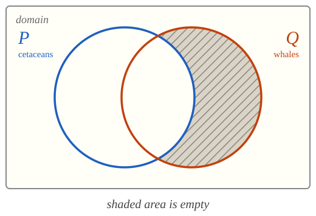
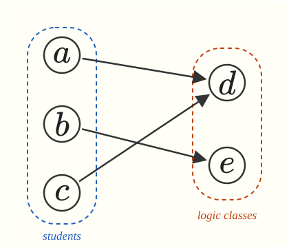
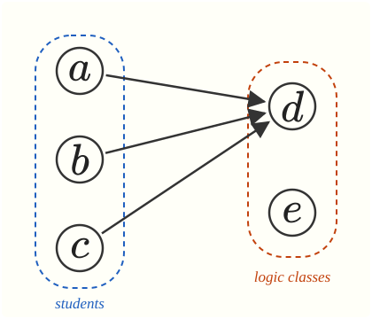

PHIL 220. Introduction to Logic
Special quantifier phrases and structural ambiguity.
Some quantifier phrases call for different quantifiers in different contexts: ‘a \(P\)’, ‘only \(P\)’, ‘no \(P\)’, ‘any \(P\)’.
Sentences with multiple quantifiers often give rise to structural ambiguity.
‘a \(P\)’, ‘only \(P\)’, ‘no \(P\)’, and ‘any \(P\)’.
The indefinite article ‘a’ often gives rise to ambiguity. But in each case below, one interpretation is more salient than the other:
A whale lives underwater.
A whale came close to shore.
Every whale lives underwater.
Some whale came close to shore.
translation key
Domain: Animals
\(Px\): \(x\) is a whale
\(Qx\): \(x\) lives underwater
\(Rx\): \(x\) came close to shore
Every thing is such that if it is a whale, then it lives underwater.
Every \(x\) is such that (\(x\) is a whale \(\to\) \(x\) lives underwater).
\[ \forall x \ (Px \to Qx) \]
translation key
Domain: Animals
\(Px\): \(x\) is a whale
\(Qx\): \(x\) lives underwater
\(Rx\): \(x\) came close to shore
Some thing is such that it is a whale and it came close to shore.
Some \(x\) is such that (\(x\) is a whale \(\wedge\) \(x\) came close to shore).
\[ \exists x \ (Px \wedge Rx) \]
A whale lives underwater.
The syntax is consistent with
\[ \exists x \ (Px \wedge Qx) \]
but that interpretation is difficult to hear in common contexts.
A whale came close to shore.
The syntax is consistent with
\[ \forall x \ (Px \to Rx) \]
but that interpretation is difficult to hear in common contexts.
The context, not the grammar, selects the quantifier.
translation key
Domain: Animals
\(Px\): \(x\) is a cetacean
\(Qx\): \(x\) is a whale
Only cetaceans are whales.
Every whale is a cetacean.
Every \(x\) is such that \(x\) is a whale only if \(x\) is a cetacean.
Every \(x\) is such that (if \(x\) is a whale, then \(x\) is a cetacean).
\[ \forall x \ (Qx \to Px) \]

The area of \(Q\) outside \(P\) is empty.
Only cetaceans are whales.
\[ \forall x \ (Qx \to Px) \]
Every whale is a cetacean. True.
Only cetaceans are whales.
\(\forall x \ (Px \to Qx)\)
Every cetacean is a whale. False. Dolphins are cetaceans.
The mistaken translation turns a true sentence into a false one. In general:
‘Only \(P\) are \(Q\)’ reverses the conditional: ‘all \(Q\) are \(P\)’.
translation key
Domain: Animals
\(Qx\): \(x\) is a whale
\(Rx\): \(x\) is krill
\(Sxy\): \(x\) eats \(y\)
Some whales eat only krill.
Some \(x\) is such that \(x\) is a whale and \(x\) eats only krill.
Some \(x\) is such that (\(x\) is a whale \(\wedge\) \(x\) eats only krill\()\)
\(x\) eats only krill \(\;\leadsto\;\) for every \(y\), (\(x\) eats \(y\) \(\to\) \(y\) is krill)
Some \(x\) is such that (\(x\) is a whale \(\wedge\) for every \(y\), (\(x\) eats \(y\) \(\to\) \(y\) is krill)).
\[ \exists x \ (Qx \wedge \forall y \ (Sxy \to Ry)) \]
translation key
Domain: Animals
\(Px\): \(x\) is a whale
\(Qx\): \(x\) is a fish
No whale is a fish.
All whales are not fish.
Every \(x\) is such that (\(x\) is a whale \(\to\) \(\neg\) \(x\) is a fish).
\[ \forall x \ (Px \to \neg Qx) \]
It’s not the case that some whale is a fish.
\(\neg\) some \(x\) is such that (\(x\) is a whale \(\wedge\) \(x\) is a fish).
\[ \neg \exists x \ (Px \wedge Qx) \]
Both translations are acceptable: they are equivalent.
One difficulty with ‘any’ is that it calls for different quantifiers in different contexts.
translation key
Domain: Animals
\(Px\): \(x\) is a whale
\(Qx\): \(x\) breathes air
Any whale breathes air.
All whales breathe air.
Every \(x\) is such that (\(x\) is a whale \(\to\) \(x\) breathes air).
\[ \forall x \ (Px \to Qx) \]
translation key
Domain: Animals
\(Px\): \(x\) is a whale
\(Qx\): \(x\) breathes air
If any whale breathes air, then they all do.
If some whale breathes air, then all whales breathe air.
If (some \(x\) is such that (\(x\) is a whale \(\wedge\) \(x\) breathes air) \(\to\) every \(x\) is such that (\(x\) is a whale \(\to\) \(x\) breathes air).
\[ \exists x \ (Px \wedge Qx) \to \forall x \ (Px \to Qx) \]
Here ‘any’ becomes \(\exists\), not \(\forall\).
If any whale breathes air, then they all do.
\[ (\exists x \ (Qx \wedge Rx) \to \forall x \ (Qx \to Rx)) \]
Informative.
If every whale breathes air, then they all do.
\[ \forall x \ (Qx \to Rx) \to \forall x \ (Qx \to Rx) \]
Trivial.
Multiple generality and the order of quantifiers.
translation key
Domain: Events
\(Rxy\): \(x\) causes \(y\)
There is a cause for everything.
There are two candidate interpretations:
Everything has some cause or other.
Some one thing is the cause of everything.
translation key
Domain: Events
\(Rxy\): \(x\) causes \(y\)
Everything has a cause.
Every \(x\) is such that \(x\) has a cause.
Every \(x\) is such that some \(y\) is such that \(y\) causes \(x\).
\[ \forall x \ \exists y \ Ryx \]
translation key
Domain: Events
\(Rxy\): \(x\) causes \(y\)
Something is a cause of everything.
Some \(x\) is such that \(x\) causes everything.
Some \(x\) is such that every \(y\) is such that \(x\) causes \(y\).
\[ \exists x \ \forall y \ Rxy \]
We rely on contextual cues to identify the intended interpretation.
In case of doubt, provide both translations and explain that the target sentence is ambiguous between them.
translation key
Domain: Students and courses
\(Px\): \(x\) is a student
\(Qx\): \(x\) is a logic class
\(Rxy\): \(x\) registers for \(y\)
Every student must register for some logic class.
Again a choice between two non-equivalent interpretations:
Each student must register for some logic class or other.
There is one logic class every student must register for.
translation key
Domain: Students and courses
\(Px\): \(x\) is a student
\(Qx\): \(x\) is a logic class
\(Rxy\): \(x\) registers for \(y\)
Each student must register for some logic class or other.
For every \(x\), (\(x\) is a student \(\to\) \(x\) must register for some logic class\()\)
\(x\) must register for some logic class \(\;\leadsto\;\) for some \(y\), (\(y\) is a logic class \(\wedge\) \(x\) must register for \(y\))
Every \(x\) is such that (\(x\) is a student \(\to\) some \(y\) is such that (\(y\) is a logic class \(\wedge\) \(x\) must register for \(y\))).
\[ \forall x \ (Px \to \exists y \ (Qy \wedge Rxy)) \]
translation key
Domain: Students and courses
\(Px\): \(x\) is a student
\(Qx\): \(x\) is a logic class
\(Rxy\): \(x\) registers for \(y\)
There is one logic class every student must register for.
For some \(x\), (\(x\) is a logic class \(\wedge\) every student must register for \(x\)\()\).
every student must register for \(x\) \(\;\leadsto\;\) for every \(y\), (\(y\) is a student \(\to\) \(y\) must register for \(x\))
For some \(x\), (\(x\) is a logic class \(\wedge\) for every \(y\), (\(y\) is a student \(\to\) \(y\) must register for \(x\))).
\[ \exists x \ (Qx \wedge \forall y \ (Py \to Ryx)) \]
Students \(a\), \(b\), \(c\); logic classes \(d\), \(e\). An arrow from \(x\) to \(y\) means \(x\) registers for \(y\).

Interpretation 1: true
Interpretation 2: false

Interpretation 1: true
Interpretation 2: true
Interpretation 2 entails reading 1, but not conversely.
translation key
Domain: Students and courses
\(Px\): \(x\) is a student
\(Qx\): \(x\) is a logic course
\(Rxy\): \(x\) registers for \(y\)
Every student must register for every logic course.
For every \(x\), (\(x\) is a student \(\to\) \(x\) must register for every logic course\()\)
\(x\) must register for every logic course \(\;\leadsto\;\) for every \(y\), (\(y\) is a logic class \(\to\) \(x\) must register for \(y\))
For every \(x\), (\(x\) is a student \(\to\) for every \(y\), (\(y\) is a logic course \(\to\) \(x\) must register for \(y\))).
\[ \forall x \ (Px \to \forall y \ (Qy \to Rxy)) \]
Every translation should be a closed formula.